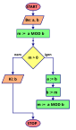

A számítógépes programok készítése összetett folyamat, mely általában az alábbi részekre bontható:
A fent leírt pontok a legegyszerűbb esetben időben egymás után következnek, de sokszor van eltérés. Például a dokumentáció mindegyik lépés tanulságait tartalmazza, így a programkészítés során folyamatosan bővül. Vagy a tesztelés során talált hibák néha a specifikáció pontosítását, az algoritmus és a program módosítását is magukkal hozzák. Ezután persze ismételten tesztelni kell a programot, vajon az az elvárásoknak megfelelően működik-e, és ha nem, akkor ismét változtatni kell.
Az egyszerűbb feladatok megoldásakor a fenti lépések közül néhány elmarad, vagy csak gondolatban történik meg. Előfordul, hogy nem készül dokumentáció, csak a forrásprogramba kerül néhány sor, ami röviden ismerteti az egyes kódrészleteket. Sok esetben az algoritmus nem kerül leírásra, csak a forrásprogram készül el. Ez egyszerűsíti a fejlesztő munkáját, kiolvasható belőle a megoldás gondolatmenete, mégis vannak hátrányai. Például a programozó felhasználja az adott programozási nyelv sajátosságait, ezért a megoldás nem lesz általános, nehezen átültethető más programozási nyelvre.
Az összetett programok készítése során ezért javasolják az algoritmus lejegyzését. Az algoritmus leírása a programozás tanulása során is fontos, segíti az algoritmikus gondolkodás fejlődését, az egyes gondolati lépések jobb megértését.
A továbbiakban néhány algoritmusleíró eszközt mutatunk be az Euklideszi algoritmus segítségével, amely két pozitív egész szám legnagyobb közös osztójának kiszámítását végzi. Az algoritmus bemenete a két pozitív egész szám, eredménye a legnagyobb közös osztó.
Az egyik legkorábban kialakult algoritmusleíró eszköz. Neumann János és Herman Goldstine munkáiban találjuk meg először, ők fejlesztették és javasolták a használatát munkatársaiknak az első számítógépek építése idején, az 1940-es években. A lépések folyamatát egy irányított vonal jelzi, mely egy kezdő elemből indul és egy záró elemben végződik. Az egyszerű utasítások egy-egy téglalap alakú dobozban találhatók, míg a bejövő vagy kimenő adatokat egy paralelogramma jelzi. A folyamat döntési pontok segítségével több ágra bontható, így létrehozhatók elágazások és ismétlések.

Az 1960-as években kialakult a strukturált programozás, amely egyik alapvetése, hogy csak bizonyos programszerkezetek használatát javasolja:
Sikerült igazolni, hogy a nem strukturált programszerkezetek használatával elkészített programoknak van strukturált megfelelője, így a megoldható problémák körét nem szűkíti, ha csak strukturált elemeket alkalmazunk. Így a '70-es évektől a strukturált programozást egyre szélesebb körben alkalmazták. Mivel a folyamatábra nem strukturált elemek létrehozását is lehetővé teszi, ezért létrehozták a csak strukturált elemeket tartalmazó algoritmusleíró eszközt, a struktogramot.
| Be: a, b | |
| m := a MOD b | |
| m > 0 | |
| a := b | |
| b := m | |
| m := a MOD b | |
| Ki: b | |
A forrásprogramhoz hasonlóan az algoritmusok is leírhatók szöveggel. Ebben az esetben is a strukturált programozásnál alkalmazott programszerkezeteket alkalmazzuk, tehát szekvencia, elágazás és iteráció fordul elő. A tagolás és a jobb olvashatóság érdekében általában egy sorban egy utasítást helyezünk el, valamint az elágazások ágait és a ciklusok magját tagolással is jelezzük.
Be: a, b
m := a MOD b
Ciklus amíg m > 0
a := b
b := m
m := a MOD b
Ciklus vége
Ki : b